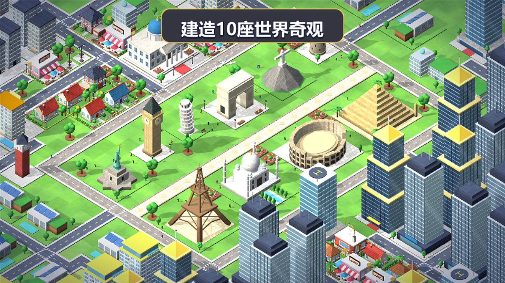

那些游戏为什么好玩
简单的建造，每次收钱时的满足感，还有一座从几栋房子慢慢成长为高楼林立的城市。你可以玩两分钟，也可以玩一整晚，总有让你想回来的理由。
2010 年前后，Millionaire City、CityVille 和 SimCity Social 等 Facebook 社交城市建造游戏曾有数百万人在玩。你建造一座小镇，从房屋收取金币，扩展土地，装饰每一个角落。这些游戏很多已经无法再玩，但它们带来的感觉依然令人难忘。Money City 是一款全新的原创游戏，专为怀念这种玩法的玩家打造。
在 Google Play 上获取
简单的建造，每次收钱时的满足感，还有一座从几栋房子慢慢成长为高楼林立的城市。你可以玩两分钟，也可以玩一整晚，总有让你想回来的理由。
Money City 是一款适用于 Android 的休闲城市建造与经营游戏。你可以建造住宅，签订从 1 分钟到 3 天的租赁合同，轻点一下收取租金，把一个小村庄发展成超级都市。你可以在拥有五个地区的岛屿上购买新土地，将建筑升级到 5 星，用公园和雕像装饰城市，并建造 10 座提升收入的世界奇观。
Money City 是单人游戏，可以离线游玩。你不需要 Facebook 账号，不需要向好友发送请求，也不需要网络连接。广告是可选的：只有在你想要奖励时才需要观看。游戏支持 12 种语言，并会以你手机的语言启动。



没有。Money City 是由独立开发者制作的原创游戏。它与这些游戏或其所有者没有任何隶属或关联关系，也未获得其认可。
它有着同样轻松的核心玩法：建造城市并向自己的建筑收取租金，同时加入了离线游玩、租赁合同、五个地区和世界奇观等现代手游功能。
不需要。Money City 是单人游戏。你可以独自离线游玩。
Money City 已在 Google Play 上架，适用于 Android。
Millionaire City、CityVille 和 SimCity Social 是其各自所有者的商标。提及它们仅为描述一种游戏类型。Money City 与这些游戏或其所有者没有隶属关系，也未获得其认可。